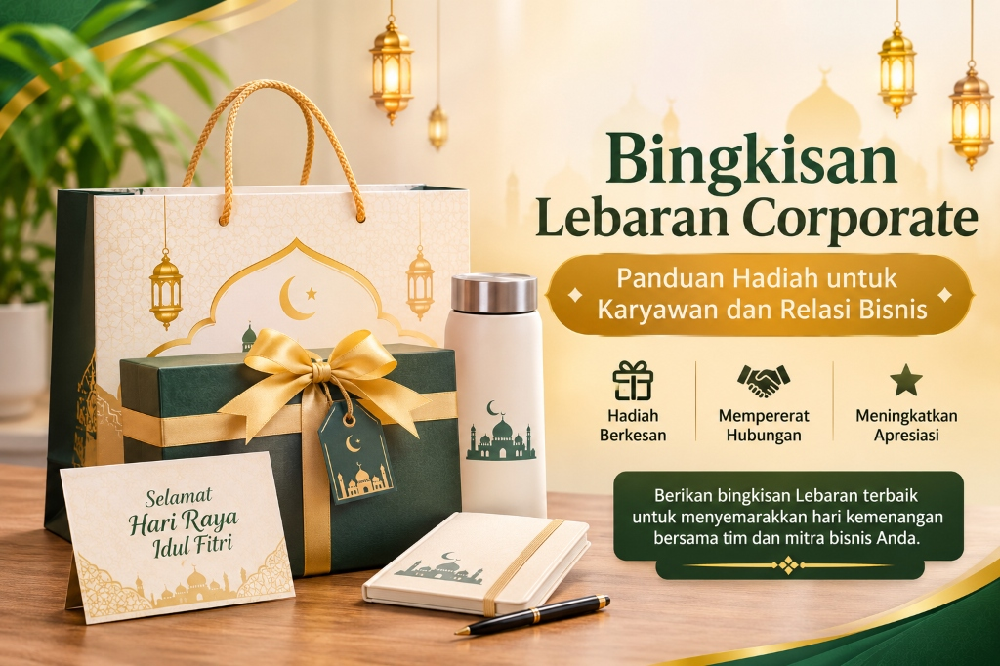

1. Ringkasan Inti Pengadaan Corporate
- Bingkisan corporate berfungsi ganda sebagai bentuk penghargaan internal dan strategi penguatan kemitraan eksternal (B2B).
- Bedakan paket karyawan (fokus fungsional dan keadilan nilai) dengan paket klien VIP (fokus kemewahan estetika dan prestise).
- Merchandise berlogo resmi seperti tumbler grafir dan agenda eksekutif memperkuat ingatan merek (brand recall).
- Periksa legalitas usaha vendor (NIB, NPWP, faktur pajak resmi) untuk kelancaran administrasi pengadaan korporat.
- Pengiriman wajib dijadwalkan matang sebelum periode puncak arus mudik Lebaran.
2. Apa Itu Bingkisan Lebaran Corporate?
Bingkisan Lebaran corporate merupakan paket hadiah terencana yang disiapkan oleh institusi, perusahaan swasta, maupun BUMN untuk diberikan kepada para pemangku kepentingan (stakeholders) profesional menjelang Hari Raya Idulfitri. Penerima paket ini umumnya mencakup staf karyawan, jajaran direksi, pelanggan setia, distributor rekanan, dan mitra korporat.
Corporate gifting memiliki dampak jangka panjang yang signifikan. Bingkisan yang dikurasi dengan baik mencerminkan kultur apresiasi yang sehat dalam perusahaan, membangun loyalitas kerja, dan mempererat komitmen bisnis antarlembaga. Sebagai mitra terpercaya dalam penyediaan bingkisan Lebaran corporate, kami memadukan standar mutu bahan pangan terbaik dengan keahlian branding visual yang elegan.

Inspirasi bingkisan Lebaran corporate: gift bag eksklusif, tumbler ramah lingkungan, buku agenda, pena eksekutif, dan kartu ucapan Idulfitri.
3. Mengapa Perusahaan Perlu Menyiapkan Bingkisan Lebaran?
- Apresiasi Nyata bagi Karyawan: Setelah setahun penuh mendedikasikan tenaga dan pikiran, bingkisan Idulfitri menjadi bukti pengakuan manajemen yang menghangatkan suasana keluarga staf di rumah.
- Merawat Hubungan Baik dengan Klien: Mengirimkan bingkisan eksklusif kepada klien adalah etika bisnis yang menegaskan kembali rasa terima kasih atas kepercayaan proyek yang telah terjalin.
- Memperkuat Posisi Merek Perusahaan: Desain kemasan berlogo yang profesional menjadi duta visual yang memperlihatkan kelas dan stabilitas perusahaan Anda.
4. Apa Saja Ide Bingkisan Lebaran untuk Karyawan?
Paket bagi karyawan sebaiknya praktis, memiliki nilai guna tinggi bagi keluarga, dan mudah didistribusikan secara massal:
Paket Sembako & Kebutuhan Pokok Keluarga
Kombinasi beras premium, minyak goreng, gula pasir kristal putih, tepung terigu, dan sirup buah dalam kemasan tas canvas kokoh sangat membantu meringankan belanja dapur menyambut hari raya.
Hampers Kue Kering Tradisional
Dua atau tiga toples kue kering wisman (nastar nanas, kastengel keju, putri salju) yang dikemas dalam box jinjing cantik memberikan suguhan manis untuk tamu keluarga karyawan.
Gift Set Tumbler & Perlengkapan Kerja
Tumbler stainless steel berinsulasi panas/dingin bersama notebook agenda kulit dan pulpen metal memotivasi semangat kerja baru pasca-liburan.
Paket Perlengkapan Ibadah Travel
Sajadah saku waterproof dan sarung tenun berkualitas tinggi yang sangat praktis digunakan untuk salat Idulfitri berjamaah di kampung halaman.
5. Apa Isi Bingkisan Lebaran untuk Klien dan Relasi Bisnis?
Bagi jajaran pimpinan klien, mitra strategis, dan akun korporat prioritas, tonjolkan cita rasa eksklusif dan kemasan premium:
Hampers Kuliner Eksklusif & Kurma VIP
Kurma Medjool ukuran jumbo, madu murni bersertifikasi, cokelat artisan, dan kue kering mentega wisman asli dalam toples kaca heksagonal bersegel emas.
Gift Set Specialty Tea & Coffee
Koleksi teh herbal premium (chamomile, jasmine green tea) atau biji kopi arabika pilihan Nusantara lengkap dengan cangkir keramik kaligrafi emas dan saringan infuser.
Lifestyle Executive Box
Tumbler LED pengukur suhu dengan grafir laser monokrom, reed diffuser aromaterapi kasturi, sajadah sutra tenun halus, dan kartu ucapan hard cover berpita satin. Anda dapat melihat detailnya di katalog Paket Hampers Corporate kami.
6. Bagaimana Memilih Bingkisan Sesuai Identitas Perusahaan?
Agar bingkisan selaras dengan panduan visual brand (brand guidelines), terapkan langkah berikut:
- Sesuaikan palet warna kemasan (pita, kertas kado, sleeve box) dengan warna resmi korporasi Anda.
- Gunakan format logo vektor tajam beresolusi tinggi (.AI atau .PDF) untuk hasil cetak yang presisi.
- Sisipkan kartu ucapan resmi bertandatangan jajaran direksi dengan redaksi doa Idulfitri yang santun dan profesional.
7. Apa Manfaat Souvenir Lebaran Custom Logo?
Kustomisasi logo pada produk seperti tumbler, notebook, pouch, dan kotak hardbox memberikan sentuhan prestisius yang permanen. Berbeda dengan brosur yang lekas dibuang, cinderamata fungsional akan terus menemani aktivitas harian mitra Anda, mempertahankan reputasi brand di mata publik. Untuk mempelajari teknik grafir dan sablonnya, baca artikel kami tentang souvenir Lebaran custom berlogo perusahaan.
8. Bagaimana Menentukan Anggaran Bingkisan Perusahaan?
Susun anggaran dengan mengelompokkan penerima ke dalam beberapa tingkatan (tier):
| Tingkatan Paket | Kelompok Target Penerima | Estimasi Rentang Biaya per Paket |
|---|---|---|
| Tier Staf & Operasional | Karyawan tetap, staf outsourcing, driver, petugas keamanan | Rp 75.000 – Rp 150.000 |
| Tier Manajerial & Klien Reguler | Kepala divisi, supervisor, vendor rekanan rutin | Rp 175.000 – Rp 300.000 |
| Tier VIP & Mitra Strategis | Jajaran direksi, komisaris, pimpinan instansi pemerintah, klien prioritas | Rp 350.000 – Rp 1.000.000+ |
9. Bagaimana Mengatur Produksi dan Pengiriman Corporate?
Alur kerja pengadaan korporat yang tertib mencakup tujuh tahapan kunci:
- Finalisasi jumlah kuota penerima dan pagu anggaran resmi dari bagian Finance.
- Pemilihan vendor berpengalaman dengan kelengkapan legalitas dan faktur pajak elektronik.
- Persetujuan sampel fisik nyata (mockup approval) sebelum produksi massal.
- Pemeriksaan kontrol kualitas (Quality Control) terhadap keutuhan isi dan kerapian cetak.
- Penyusunan database alamat pengiriman multi-cabang yang akurat.
- Pengiriman bertahap paling lambat H-10 sebelum masa cuti bersama nasional.
10. Apa Kesalahan yang Harus Dihindari dalam Corporate Gifting?
- Logo Terlalu Raksasa dan Mengganggu Estetika: Produk dengan logo yang terlalu mendominasi justru membuat penerima enggan menggunakannya di ruang publik.
- Mengabaikan Kualitas Bahan Produk: Memberikan barang yang lekas rusak dapat mencoreng nama baik perusahaan pemesan.
- Keterlambatan Pengiriman Logistik: Mengirimkan paket mendekati hari H berisiko bingkisan tertahan di kantor yang telah libur mudik.
11. Pertanyaan yang Sering Diajukan (FAQ)
12. Kesimpulan & Langkah Selanjutnya
Menyiapkan bingkisan Lebaran corporate yang elegan dan berkesan adalah wujud komitmen institusi dalam merawat aset terpentingnya: sumber daya manusia yang berdedikasi dan mitra bisnis yang setia. Dengan persiapan seawal mungkin dan dukungan mitra vendor profesional, pengadaan hari raya perusahaan Anda akan berlangsung mulus dan membanggakan.
Hubungi tim konsultan kami atau kunjungi beranda Souvenir Lebaran untuk mendapatkan proposal penawaran resmi serta katalog bingkisan instansi terlengkap.